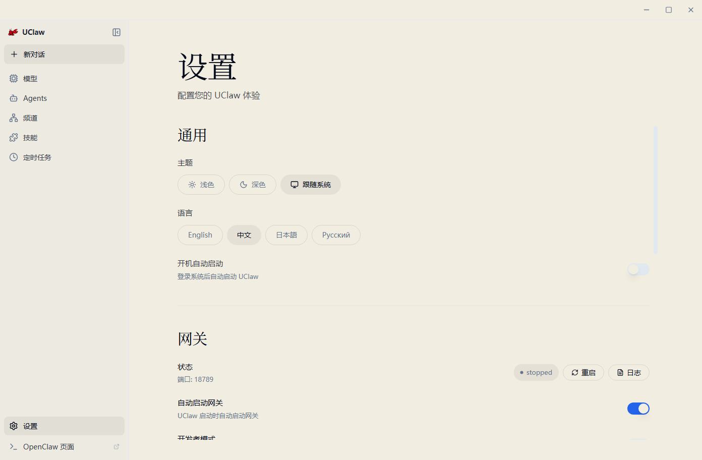
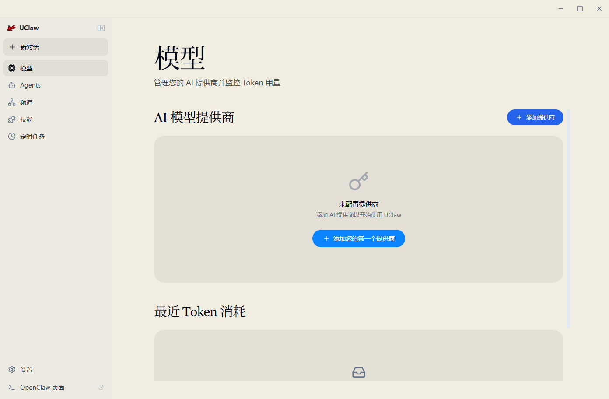
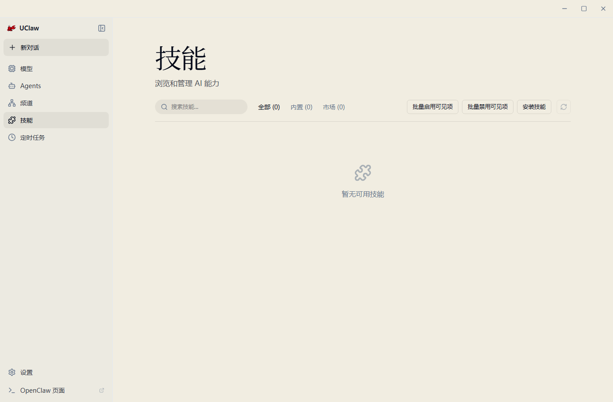
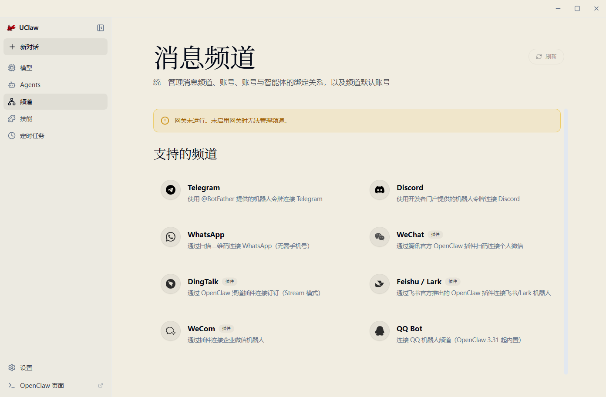
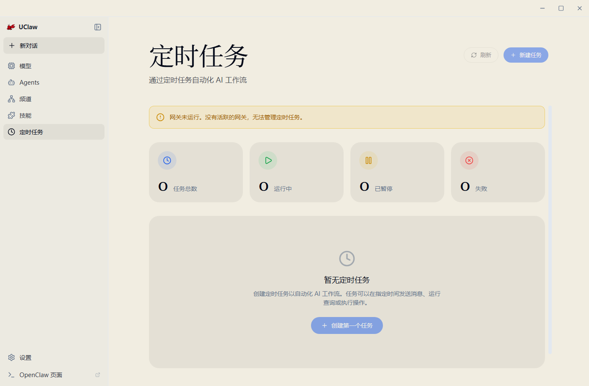

普通用户常见用途
- 和 AI 对话，整理资料、写文案、解释代码、生成计划。
- 使用已提供的 AI API 服务与联网搜索能力。
- 需要较新公开信息时，让 AI 使用内置联网搜索。
- 把 UClaw 放在 U 盘或移动硬盘中，在不同电脑上使用同一个工作区。
UClaw 是一个桌面端 AI 助手应用。你可以把它理解成一个本地聊天工作台：它负责显示聊天界面、管理工作区、保存使用配置，并连接我们远程部署的 AI API、联网搜索能力、工具和插件。
UClaw 不是一个单纯网页，也不是自带免费模型；它是一个已经集成 AI API 与联网搜索能力的桌面应用，并提供一键配置和一键切换能力。
工作区：保存配置、会话和相关数据的文件夹。
AI API：由我们远程部署并维护的模型服务入口，UClaw 提供应用内一键配置和一键切换。
联网搜索：由远程服务提供搜索能力，UClaw 已支持应用内一键配置和一键切换。
安装前先准备好应用包、工作区和网络环境。AI API 与联网搜索能力通常可通过应用内一键配置完成。
UClaw 通过远程部署的 AI API 服务提供模型调用能力。普通用户不需要自行部署或维护服务，只需要按界面完成一键配置或切换。
| 需要准备 | 说明 |
|---|---|
| UClaw 安装包或移动盘包 | 从 GitHub Release 或你收到的安装包中获取。Windows 通常是 .exe 安装包，也可能有适合 U 盘或移动硬盘使用的压缩包。 |
| 一个工作区文件夹 | 用来保存 UClaw 配置、会话和相关数据。推荐放在容易找到的位置，例如移动硬盘里的 workspace 文件夹。 |
| AI 服务配置 | 用于连接远程 AI API 服务的配置信息。通常由 UClaw 提供一键配置入口，普通用户不需要手动部署或维护后端服务。 |
| 稳定网络 | 联网搜索、模型调用、首次下载或更新都需要网络。公司网或校园网限制较多时，可能需要代理或更换网络环境。 |
第一次启动 UClaw 时，一般会进入 Setup 设置向导。你只需要跟着界面一步步走。
如果你之前已经在某个工作区完成过设置，再次选择同一个工作区时，UClaw 会尽量沿用已有配置，减少重复填写。
确认应用能正常打开。如果界面提示缺少运行环境，先按提示修复；如果没有提示，可以直接下一步。
选择一个文件夹作为工作区。这个文件夹会保存你的 UClaw 配置、会话和相关数据。移动盘用户建议把工作区和 UClaw 数据目录放在同一个 U 盘或移动硬盘里。
根据界面提示完成 AI 服务配置。通常只需要使用 UClaw 提供的一键配置或一键切换，不需要自己连接、部署或维护后端服务。
UClaw 已集成联网搜索能力，并支持在界面里一键配置和一键切换。普通用户不需要手动编辑配置文件。
完成设置后，UClaw 会启动本地网关。网关第一次启动可能需要一些时间，正常情况下等待片刻即可进入聊天。

完成 Setup 后，最常见的操作就是开始对话、需要时让 AI 联网搜索，以及在模型或设置页面检查和切换 AI 服务配置。
UClaw 会保存会话，但跨设备、移动硬盘、工作区切换时，重要结果最好复制到自己的笔记、文档或项目文件里。
打开 UClaw，进入对话页面，在输入框输入问题，例如“帮我整理这段会议记录”。按发送后等待 AI 回复。
当问题涉及“最新消息”“今天”“最近版本”“现在价格”等变化信息时，明确要求联网搜索并附来源。
进入模型或设置页面，查看当前可用模型，并按需要一键切换 AI API 或联网搜索配置。若应用提示重启网关或刷新配置，按提示操作即可。
UClaw 提供 AI API 与联网搜索能力的一键配置和一键切换。普通用户只需要确认服务配置可用、联网搜索已开启，并且当前网络可以访问远程服务。
“请联网搜索这个软件最近发布了什么更新，并附上来源。” “搜索后总结，不要只凭记忆回答。”
模型页面可以查看模型使用量、Token 分布和近期趋势，也可以作为检查 AI API 配置是否正常的入口。

UClaw 可以配合 U 盘或移动硬盘使用。核心原则是：使用包内启动器打开应用，让数据目录和工作区都跟着移动盘走。不同系统的启动方式略有区别。
工作区里保存了配置和会话数据。删除或移动后，UClaw 可能会要求重新完成 Setup。
Launch UClaw.command 启动，避免数据目录指向错误。| 场景 | 推荐做法 |
|---|---|
| 同一台电脑长期使用 | 安装到本机，工作区放在本机磁盘即可。 |
| 跨 Windows、macOS、Linux 切换 | 使用移动硬盘或双分区方案，通过包内启动器打开应用，并把工作区放在各系统都能访问的位置。 |
| 换电脑后又进入 Setup | 这是正常保护：如果本机没有完成过该工作区设置，或旧路径不存在，UClaw 会要求重新确认。 |
下面几张截图展示 UClaw 的主要页面。普通用户日常最常用的是对话、模型、设置；需要自动化或外部消息时再使用定时任务和频道。
先完成工作区和模型配置，能正常对话后，再慢慢了解技能、频道和定时任务。



遇到问题时，先看是不是工作区、AI 服务配置、联网搜索开关或本地网关启动问题。下面是最常见的几类。
第一次启动会准备本地运行环境并检查必要组件。老电脑、移动硬盘或杀毒软件扫描都可能拖慢启动。
常见原因是第一次在这台电脑安装、之前保存的工作区路径不存在、移动硬盘盘符变了，或者你手动删除了工作区。重新选择正确工作区即可。
说明 AI 服务配置没有保存成功，或者当前工作区没有读取到旧配置。进入 AI 配置页重新完成一键配置或切换即可。
如果普通对话可以但搜索失败，先检查联网搜索开关和一键配置是否完成，再检查当前网络是否能访问远程服务。
UClaw 会准备本地运行环境并检查必要组件。慢速移动硬盘、老电脑或安全软件扫描仍可能影响速度。
桌面应用会在本机保存一些状态。新版会在工作区不存在或首次安装时要求重新 Setup，避免直接进入旧对话界面造成误解。
重新选择原工作区，并确认移动硬盘盘符和路径是否变化。如果原工作区不存在，就需要重新完成 Setup。
工作区、服务配置和聊天记录都可能包含敏感信息。跨电脑和移动硬盘使用时，尤其要注意设备和文件安全。
不要把服务配置、访问凭证或包含敏感信息的设置页面截图发给别人。
联网搜索得到的信息要看来源。重要决策不要只听 AI 总结，最好打开来源页面核对原文、日期和上下文。
如果你只想快速定位问题，可以先按这张表操作。
先选好工作区，再完成 AI 服务一键配置，最后进入对话。跨电脑使用时，把工作区和程序一起带走；联网搜索时，确认一键配置已完成且网络可用。
| 现象 | 先做什么 |
|---|---|
| 打不开软件 | 重新下载完整安装包；Windows 可尝试右键“以管理员身份运行”。 |
| 一直停在网关连接中 | 等待 30 秒；若仍不行，退出应用后重开；检查杀毒软件是否拦截。 |
| 模型列表为空 | 确认 AI API 配置是否已完成，必要时重新使用一键配置或一键切换。 |
| 对话能用，搜索不能用 | 确认联网搜索开关已打开，并完成 UClaw 的一键联网搜索配置；再检查网络是否可用。 |
| 换电脑后配置没了 | 重新选择原工作区；确认移动硬盘盘符和路径是否变化。 |